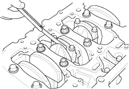
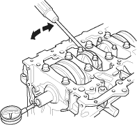

- Remove the oil pump (see page 8-11).
- Remove the baffle plate (see step 6 on page 7-13).
- Measure the connecting rod end play with a feeler gauge between the connecting rod and crankshaft.
Connecting Rod End Play:
Standard (New):
0.15 - 0.30 mm
(0.006 - 0.012 in.)
Service Limit:
0.40 mm (0.016 in.)

- If the connecting rod end play is out-of-tolerance, install a new connecting rod, and recheck. If it is still out-of-tolerance; replace the crankshaft (see page 7-13).

- Push the crankshaft firmly away from the dial indicator, and zero the dial against the end of the crankshaft. Then pull the crankshaft firmly back toward the indicator; the dial reading should not exceed the service limit.
Crankshaft End Play:
Standard (New):
0.10 - 0.35 mm
(0.004 - 0.014 in.)
Service Limit:
0.45 mm (0.018 in.)

- If the end play is out-of-tolerance, replace the thrust washers and recheck, if it is still out-of-tolerance, replace the crankshaft.